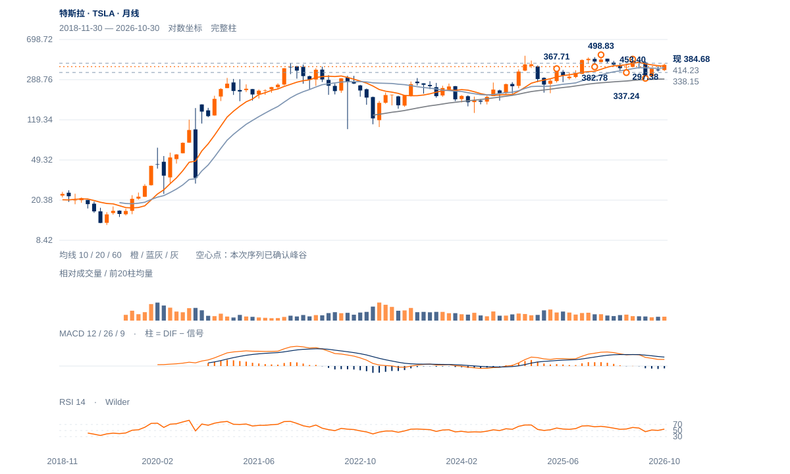

近期偏338.15附近承接与急反抽，2—6周恢复367.67—388.56前仍按宽区间下部重建。
特斯拉 · 2026-11-20完整收盘
345.82仍在338.15上方，哪一级结构尚存？
345.82-7.64%
修复失败接近大谷
分期限展望
未来2—6周先看338.15大谷附近是否承接，再处理367.67—388.56恢复。11—12日修复曾通过、20日原受损线触发，当前属于恢复后的失败，不能追溯改成从未通过。
未来1—3个月仍在297—453长期宽区间下部。338.15大谷保持且重新越414.23，才有重返区间上部的条件；若大谷周级失守，原恢复结构进一步损伤，不能把297当作保证下限。

长期背景
全年498.83后大高逐步降低，453.40仍是长期升级关口；297—453宽区间内的短线修复，不等于全年下降高区已被突破。完整10月均衡和历史水平只提供背景，当前价格需要由后续确认检验。 当前日收盘345.82与已完成月线背景分开判断；11月仍未结束，不提前计为完整月级反转。
中期结构与新证据
完整周线已更新至11月20日：2026-09-30低345.88（2026-10-16确认）；2026-11-02高414.23（2026-11-20确认）；2026-11-05低338.15（2026-11-20确认）。最新一周与上次11月13日背景分别保存；23日仅为本周进行中观察。20日345.82触发367.67原受损线，最低344.33仍高于338.15大谷。11—12日388.56与200日条件通过、16日窗口减弱、20日原受损均保留；不能删除曾确认修复，也不能把现在重新解释成一直有效。
确认与失效
367.67先恢复，再看388.56持续保持与414.23升级。
367.67原失效20日触发，338.15周级破坏将进一步削弱修复。
主要反方
338.15尚守和长期297—453宽区间背景留下反弹空间；若重夺367.67，破坏程度可下降。
波动与量能
RSI14 37.78；ATR14 17.14；相对量1.27倍